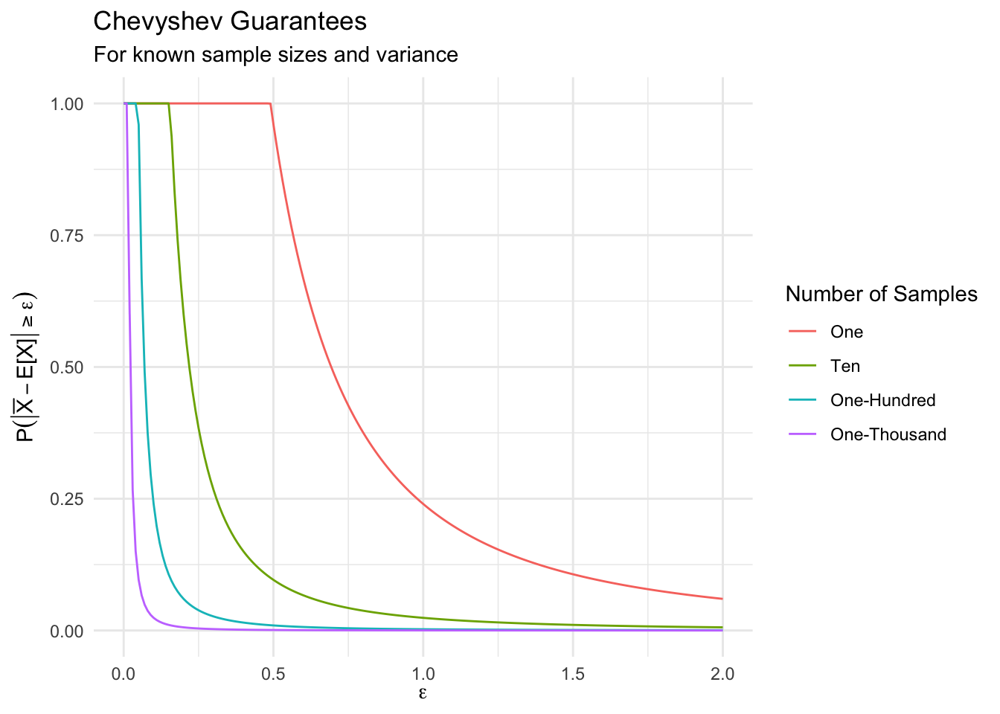

The Weak Law of Large Numbers
1 Weak Law of Large Numbers
1.1 Set Up the Space
Suppose that you have a coin that you are tossing that is unfair. But only a little bit unfair: the probability the coin comes up heads is 60%, while the probability that it comes up tails is 40%.
Does this mean that in any given flip you will get a 0.6 or 0.4? No! Of course not, it is a probability statement over the outcomes, which are in \(\{0, 1\}\).
For an important digression in your studies, you could think about election forecasts: in 2016 most models predicted that Hillary Clinton would defeat Donald Trump in the electoral college. A leading forecasting sight, fivethirtyeight.com put gave Trump a 29% chance of winning. A lot of people casually interpreted this as though the outcome was going to be 29% Trump and 71% Clinton, which they interpreted as an outcome that would then place Clinton into office. When the coin came up “Trump” there was a lot of conversation about how to interpret these model predictions, and how to talk about these model predictions to those who are not familiar with the mental gymnastics of probability theory.
Returning to the task at hand: Does a \(P(H=0.60)\) mean that in \(10\) tosses you are guaranteed to get \(6\) that are heads and \(4\) that are tails? Still no! While this is possible – and, in fact, the most likely outcome – there are many other outcomes that could come up. In fact, the outcomes range from zero heads all the way to ten heads. In expectation you will generate 60% of the tosses coming up heads, but in any single 10-toss sequences, there is randomness in this process that might lead a different number of heads to be shown. In fact, if you defined \(H_{(10)}\) to be the summary statistic that sums the number of heads in a ten-toss sample, then you could develop the probability statement over each of the values that the statistic can obtain – illustrating that every statistic is, itself, a random variable.
If you defined a slightly different statistic, \(\overline{H}_{(n)} \equiv \overline{H} = \frac{1}{n} \sum_{i=1}^{n} H_{i}\), where now \(H_{i}\) is a random variable that takes the value \(1\) if a coin comes up heads and a value \(0\) if it comes up tails, we might think of this as the sample average of the number of heads that come up. (Like the book, we note that \(\overline{H}_{(n)}\) is a statistic that has a certain number of samples, \(n\), but that the notation is cumbersome and simply drop the subscript \((n)\).)
So then, what do we mean when we say that there is a 60% chance that it will come up heads? When you toss a single coin, you know that it will either be a Head or a Tail; and that if you toss two coins, there are three possible outcomes: {Zero Heads, One Head, Two Heads}, and that if you toss ten coins there is still no guarantee that you will get exactly six heads.
But, you likely have a belief that as you toss more and more coins, the sample average should get closer to the \(0.6\) population parameter. This is a good belief to have, because it is true! But, why is it true? What about probability makes this happen?
In the rest of this demo, we’re going to first establish that as we toss more and more coins, the sample average actually gets closer to the population parameter. Then, we’re going to reason about why (the answer is Chebyshev’s Inequality for the Sample Average), and then we’ll reason about whether this also works for other distributions than coin tosses.
1.2 Coin Tosses
Let’s define a function that is called toss_coin that represents a coin that actually has an expected value of coming up heads that is 0.6. (This is little more than writing a named function that sets values for the already existing rbinom function. In general, this is bad coding practice to overload an already existing function, but it is useful for teaching this particular concept, because we can write toss_coin rather than rbinom.)
toss_coin <- function(times, coins, prob_of_heads) {
rbinom(n = times, size = coins, prob = prob_of_heads)
}Then, we can sample from this coin’s distribution by tossing it a small number of times.
toss_coin(times=1, coins=1, prob_of_heads = 0.6)
toss_coin(times=1, coins=1, prob_of_heads = 0.6)
toss_coin(times=1, coins=1, prob_of_heads = 0.6)
toss_coin(times=1, coins=1, prob_of_heads = 0.6)## [1] 1
## [1] 1
## [1] 1
## [1] 0Suppose that we wanted to toss more than one coin? It would, obviously get pretty cumbersome if we had to issue this toss_coin(times=1, coins=1) command say, 1000 times. Lucky for us, we’ve written the function so that it generalizes to more coins! To toss ten coins, we can call for toss_coin(times=1, coins=10), and for a million, toss_coin(times=1, coins=1e6).
toss_coin(times=1, coins=10, prob_of_heads=0.6)
toss_coin(times=10, coins=1, prob_of_heads=0.6)## [1] 5
## [1] 1 1 0 0 0 1 0 1 0 0Notice that if we increase the number of times it is like tossing the same coin a larger number of times; and if we increase the number of coins, it is like increaseing the number of coins that we are tossing at any single time. These actually have the same interpretation, since all the tosses are independent of all the other tosses, but it does change the way the data is represented to us.
1.3 Tossing more coins
Imagine undertaking the following process:
1. Pick up a single coin, toss it, and record the average of the toss; then,
2. Pick up another coin, toss both, and record the average of the two tosses; then,
3. Pick up another coin, toss all three, and record the average of the three tosses; then ...
...
1000. Pick up another coin, toss all thousand and record the average of the thousand tosses. What would the sample average data look like from this sort of simulation.
To create the data, do the following
- First, make a dataframe that has 1,000 rows. Let the first column,
coinsindex the number of coins that were tossed in that simulation. Let the second columnheadsreport the number of heads that came up. And, let the third columnaveragereport the number of heads as a proportion of the number of tosses.
toss_many_coins <- function(times, coins, prob_of_heads) {
toss_data_ <- data.frame(id=1:coins) %>%
mutate(
coins = 1:n(),
heads = toss_coin(times=1:n(), coins=coins, prob_of_heads=prob_of_heads),
average = heads / coins)
}
toss_data <- toss_many_coins(times=1, coins=1000, prob_of_heads=0.6)Notice a few neat things about this process of creating data, using dplyr. First, we’ve built the dataframe to have 1,000 rows, indexed by a column that we have called id. Unlike numpy over in python, this id column doesn’t have any special properties, and we could have named it anything. Second, within the mutate call, we’re making new data. One surprising behavior in this call is that you’re able to create new columns, predicated on the existence of other columns, that are made at the same time.
Also, notice that within the function I called the object that is going to be returned toss_data_ with an _ at the end. This doesn’t do anything, per se, but it does help to distinguish between the results internal to the function, and what we’re going to return out to the global namespace. Essentially, this keeps us from confusing things as humans, which means that the computer will also not be confused.
This isn’t a pure inception event, because the newly created variables need to be ordered chronologically within the mutate call. This means that the following code would not work:
data.frame(id=1:1000) %>%
mutate(
heads = toss_coin(times=tosses),
tosses = 1:n(),
average = heads / tosses)We can view the first six rows of this data by calling for the head() of the dataframe, and see that things seem sensible.
head(toss_data)## id coins heads average
## 1 1 1 0 0.0000000
## 2 2 2 1 0.5000000
## 3 3 3 2 0.6666667
## 4 4 4 4 1.0000000
## 5 5 5 3 0.6000000
## 6 6 6 6 1.0000000But, simply looking at the rows of data isn’t presenting this data in its most compelling way. Instead, this is absolutely the place for a plot.
toss_data %>%
ggplot() +
aes(x=coins, y=average) +
geom_point(color = berkeley_blue, size = 0.1) +
geom_line(aes(y=0.6), color = california_gold) +
lims(y = c(0,1)) +
labs(
title = 'Coin toss averages vs. sample size',
subtitle = 'As sample size increases, sample averages are closer to 0.6',
x = 'Number of tosses',
y = 'Average number of heads'
)
coin_plot <- function(times, coins, prob_of_heads) {
coin_plot_ <- toss_many_coins(times=times, coins=coins, prob_of_heads=prob_of_heads) %>%
ggplot() +
aes(x=coins, y=average) +
geom_point(color = berkeley_blue, size = 0.1) +
geom_line(aes(y=prob_of_heads), color = california_gold) +
lims(y = c(0,1)) +
theme(
plot.background = element_rect(fill = 'transparent', color = NA),
panel.border = element_blank()) +
labs(
title = 'Coin toss averages vs. sample size',
subtitle = sprintf('As sample size increases, sample averages are closer to %.2f', prob_of_heads),
x = 'Number of tosses',
y = 'Average number of heads'
)
}
plot_0.6 <- coin_plot(times=1, coins=1000, prob_of_heads=1)
plot_0.6
This seems to be doing what we want it to do! What do you think will happen if the probability of success is much higher?
- What will this look like if the probability of heads is \(1.0\)?
- What will this look like if the probability of heads is \(0.9\)?
- What will this look like if the probability of heads is \(0.2\)?
We will plot these on the next page.
1.4 Plot distinct distributions
plot_1.0 <- coin_plot(times=1, coins=1000, prob_of_heads=1.0)
plot_0.9 <- coin_plot(times=1, coins=1000, prob_of_heads=0.9)
plot_0.2 <- coin_plot(times=1, coins=1000, prob_of_heads=0.2)
plot_1.0 / plot_0.9 / plot_0.2 +
plot_layout(guides = 'collect')
What do you notice about the rate of convergence in probability between the different plots? Do some of them seem to be moving toward the true population expectation faster than others? Why is this? What is the variance of a Bernoulli random variable with \(P(H) = 0.9\), compared to one with \(P(H) = 0.6\)?
1.5 Weak Law of Large Numbers
What we are illustrating above is the Weak Law of Large Numbers (WLLN), which says that as we take more samples, the sample average, \(\overline{X}\), will converge in the probability limit to the expected value of \(X\), \(E[X]\).
To use the formal definition:
Theorem 1.1 (Weak Law of Large Numbers) Define \(\overline{X}\) to be \(\frac{1}{n} \sum_{i=1}^{n} X_{i}\).
Then, if \(X_1, \dots, X_n\) are i.i.d. random variables with finite, but positive variance \(0 < V[X] < \infty\),
\[ \overline{X}_{(n)} \overset{p}\rightarrow E[X] \]
This means that, even though we never really get to know the population parameter that is the \(E[X]\), if we take a lot of draws and take the average of those draws, it become increasingly close.
This is very useful! It means that we can know something that is fundamentally unknowable if we have enough data.
1.6 The WLLN is about a probability limit.
It makes the statement that, as we add data to a sample average estimator, that estimator will get closer and closer to the population expectation.
But, what provides this guarantee? Why is it that the WLLN happens? To answer this question requires that we talk about Chebyshev’s Inequality.
1.7 Chebyshev’s Inequality
Earlier in our reading we read Theorem 2.1.18 which says:
Theorem 1.2 (Chebyshev's Inequality) Let \(X\) be a random varaible with finite \(\sigma[X] > 0\). Then, > 0,
\[ Pr\big[\left|X - E[X] \right| \geq \epsilon\sigma[X]\big] \leq \frac{1}{\epsilon^2} \]
The book shows in the proof for Theorem 3.2.5 how to recast this inequality for a single draw, into an inequality for the sample average. But, it does the math really quickly, so spread it out some here.
Theorem 1.3 (Markov Inequality) \[ Pr[X \geq c\cdot a] \leq \frac{E[X]}{c\cdot a} \]
where \(X\) is a random variable, and \(c\) and \(a\) are both positive constants.
Proposition 1.1 (Inequalities for Days) The part that it took Alex a while to appreciate is how eliminating \(c\) works. Suppose that you wanted to eliminate \(c\) from both sides of this outer inequality – the one that separates the probability statement from the ratio of expectations.
Written this way we can see that to remove \(c\) from the left side of the inequality we would divide by \(c\); to remove \(c\) from the right hand side, we would need to multiply by \(c\). This could be surprising, because it is opposite to what you might have a heuristic for doing. We need to treat the constant this way because it is nested within another inequality, in the probability statement.
If you reason about it for a moment, this behavior is reasonable.
Suppose that you have some random variable, and you ask for the probability that it is larger than some value. If that value is larger (i.e. \(c\) is positive and larger than one), then the probability should be smaller. If that v alue is smaller (i.e. \(c\) is positive, but smaller than one) then the probabliy should be larger.
To get closer to how we will use this fact in a moment, note that we could rewrite the statement as,
\[ \left\{Pr[X \geq c \sigma] \leq \frac{E[X]}{c\sigma}\right\} \Leftrightarrow \left\{Pr[X \geq \sigma] \leq \frac{E[X]}{\sigma} \right\} \]
1.8 Chevyshev Inequlaity for the Sample Average
The sample average, \(\overline{X}\), is a random variable – it is simply a summarising function of \(X\) which is itself a random variable. Because of this, we can rewrite the classic statement of the Chevyshev inequality, just with a different (but known) statement of its sampling variance.
Note, that the sampling variance for \(\overline{X}\), \(V[\overline{X}] = \frac{V[X]}{n}\), which was proven just before the statement of Chebyshev’s Inequality for the Sample Mean in the book. Then, using the definition and notation for standard deviation, we can write:
\[ \begin{aligned} Pr\big[\left|X - E[X] \right| \geq \epsilon\sigma[X] \big] & \leq \frac{1}{\epsilon^2} \\ Pr\big[\left|\overline{X} - E[X] \right| \geq \epsilon \sigma[\overline{X}]\big] & \leq \frac{1}{\epsilon^2} & \text{(Changing }X \rightarrow \overline{X}) \\ Pr\big[\left|\overline{X} - E[X] \right| \geq \epsilon\big] & \leq \frac{\sigma[\overline{X}]}{\epsilon^2} &\text{(Using Prop 1.1)} \end{aligned} \]
To complete the statement, we can use the theorem for \(\sigma[\overline{X}]\),
\[ \begin{aligned} Pr\big[\left|\overline{X} - E[X] \right| \geq \epsilon\big] \leq \frac{V[X]}{\epsilon^{2}n} \end{aligned} \]
1.9 Using Chebyshev’s Inequality for the Sample Mean
Chebyshev’s gives us a way to reason about the probably that the sample average will be more than some particular \(\epsilon\) away from the true expectation.
Specifically, suppose that we want to know:
For the particular coin that we’re tossing with a probability of landing heads = 60%, what is the probability that the sample mean is more than 0.1 away from the true expected value, given some number of tosses we have conducted, \(n\)?
That is basically asking the following:
\[ P\left[|\overline{X} - E[X] | \geq 0.1 \right] \leq \frac{V[X]}{0.1^2n} \] In this particular case, we can know the value for \(V[X]\) of our coin:
\[ \begin{align*} V[X] &= E[X^2] - E[X]^2 \\ &= E[X^2] - (0.6)^2 \\ &= E[X^2] - 0.36 \\ &= \sum_{\forall x} x^2 \cdot f_x - 0.36 \\ &= (0^2 \cdot 0.4 + 1^2 \cdot 0.6) - 0.36 \\ &= (0 + 0.6) - 0.36 \\ V[X] &= 0.24 \end{align*} \]
And so, we can substitute this into our Chebyshev equation and do a little evaluation of the math
\[ P\left[|\overline{X} - E[X] | \geq 0.01 \right] \leq \frac{.24}{0.01n} \]
There are a number of ways that you could use Chevyshev’s to produce a guarantee.
- Notice that this guarantee will be agnostic to the actual probability distribution of the random variable – this means that it will hold for any random variable that has a finite variance.
- If you have additional information about the random variable, specifically information about how it is shaped in the form of a specific formula that describes its probability distribution, you could do better than Chevyshev’s.
- But, Chebyshev’s provides a useful bound that applies is all circumstances.
Notice that this inequality must hold; it isn’t that you have to tinker with parameters in it to ensure that it holds. No, instead, this is an iron-clad rule. And so, if you posses information that locks down one side of the inequality, you can know that the other side will be bound by the inequality.
- If you know \(V[X]\), and the number of draws that you have taken, \(n\), then you can know the Chebyshev guarantees that are implied for some \(\epsilon\).
- If you know the Chebyshev guarantees that you would like to have, and \(V[X]\), then you can know the number of samples that will be required to produce sample averages that are closer than \(\epsilon\) to the \(E[X]\).
1.10 Case 1: Variance known, sample size known
In this case of a coin toss, we’ve already shown that the variance of this random variable is \(0.24\). Suppose that we had tossed the coin 10 times, and we wanted to know, “What are the Chebyshev guarantees for the sample mean that apply to this die?”
We can write the inequalty for the sample mean, substituting in the known values.
\[ \begin{aligned} P\left[|\overline{X} - E[X] | \geq \epsilon \right] & \leq \frac{0.24}{\epsilon^2(10)} \\ & \leq \frac{0.024}{\epsilon^2} & (\text{Divide by 10}) \end{aligned} \]

Reason about this plot:
- If you take only one sample, and return the sample average, it is just the same as drawing a single data point. Notice that this produces the same result as Theorem 2.1.18 in Foundations of Agnostic Statistics.
- Read where \(\epsilon = 1\). The Chebyshev guarantee for any random variable with \(V[X] = 0.24\) says that there is about a \(25\%\) chance of drawing a value that is more than one unit away from \(E[X] = 0.6\). In the case of this particular random variable, which is a coin toss, notice that the Chebyshev bounds are looser than what is actually possible. Because this is a coin, if we take a sample average of a single toss, we will have either a zero or a 1, which means that \(|\overline{X} - E[X]| = \{0.4, 0.6\}\)It is not possible to draw a single value that is smaller than \(-0.4\) or larger than \(1.6\) because this random variable is bounded on \([0, 1]\). But, we only know that because we know more about the distribution of the random variable, something that Chebyshev doesn’t have (or require).
- Read where \(\epsilon = 0.5\). The Chebyshev guarantee at this point is somewhat more sensible, and says that there is just less than a \(100\%\) chance of drawing a value that is more than \(0.5\) units away from \(E[X] = 0.6\). This is true, but again, we know more than the Chebyshev guarantee – namely that the random variable is bounded on \([0,1]\); with this additional knowledge, we could know that we can place this \(100\%\) guarantee at \(\epsilon = 0.6\), not \(\epsilon = 0.5\).
- If you take one-thousand samples then we get much stronger guarantees. Essentially, Chebyshev’s provides a guarantee that the probability of generating a sample average that is more than \(0.15\) units from 0.6 is \(15\%\). Because we know about the distribution, we can actually calculate the probability of drawing \(\overline{X}_{(1000)} > 0.64\) or \(\overline{X}_{(1000)} < 0.56\). Or, we can simulate it!
one_thousand_samples <- rbinom(n=100000, size=1000, prob=0.6) / 1000
probs <- mean(one_thousand_samples <= 0.56) + mean(one_thousand_samples >= 0.64)
probs## [1] 0.01056We interpret this in the following way:
- The Chebyshev Inequality for the sample average says that the probability of getting a sample average that is more than \(0.04\) away from the true population expectation of \(0.60\) is \(0.15\), or \(15\%\). This is a nice guarantee to have, and one that exists no matter the distribution of the random variable.
- But, since we actually do know the variance of the random variable, we we can compute the actual bound. When we do this (in this case, using an approximation from a simulation), we find that only about \(1\%\) fall outside this range.
Why then is this useful? This is the last refresher about this proof strategy:
This is an agnostic approach that does not require us to know anything about the random variable. Instead, any random variable that has finite variance will have sample averages that converge in probability to the population expectation. This is the **Weak Law of Large Numbers*! Neat.
1.11 Case 2: Variance known, guarantee stated, solving for sample size
If you know the variance of the random variable, then you can use Chevyshev’s inequality to determine the amount of data that you require in order to produce a sample average that has a known probability of being closer than \(\epsilon\) to the true population expectation.
Suppose that we were still working with the coin with a \(0.6\) probability of coming up heads that we have used throughout this demo. Then, as an example, you could ask, “How many tosses would I need to have the probability of getting a sample average that is closer than \(0.2\) from the true population expectation to be \(80\%\)? This will require just a little bit of re-writing, but it isn’t too hard (although, Alex will acknowledge that it took him 20 minutes to figure out where he was going to make this work).
Rearranging terms using valid statements:
\[ \begin{aligned} P\left[|\overline{X} - E[X] | \geq \epsilon \right] &= \frac{V[X]}{\epsilon^2 n} & (\text{Chebyshev's}) \\ P\left[|\overline{X} - E[X] | \geq \epsilon \right] &= 1 - P\left[|\overline{X} - E[X] | \leq \epsilon \right] & (\text{Law of Total Probability}) \\ 1 - P\left[|\overline{X} - E[X] | \leq \epsilon \right] &= \frac{V[X]}{\epsilon^2 n} & (\text{Substitution}) \\ - P\left[|\overline{X} - E[X] | \leq \epsilon \right] &= \frac{V[X]}{\epsilon^2 n} - 1 \\ P\left[|\overline{X} - E[X] | \leq \epsilon \right] &= 1 - \frac{V[X]}{\epsilon^2 n} \\ \end{aligned} \]
This fact helps us move forward toward an answer! If we solve for \(n\), we are there!
\[ \begin{aligned} 0.80 &= 1 - \frac{V[X]}{\epsilon^{2}n} \\ &= 1 - \frac{0.24}{(0.2^2)} \cdot \frac{1}{n} = 1 - \frac{0.24}{0.04} \cdot \frac{1}{n} \\ &= 1 - \frac{6}{n} \\ 0.80 &= \frac{n - 6}{n} \\ 0.80 \cdot n &= n - 6 \\ 0.8n - n &= -6 \\ -0.2n &= -6 \\ n &= 30 \end{aligned} \]
And so, Chebyshev says that if we draw 30 samples, the probability of generating a sample average that is larger than \(0.8\), or smaller than \(0.4\) is \(0.2\).
To evaluate this guarantee, again simulate a series of draws with eight coins being tossed.
thirty_tosses <- rbinom(n=10000, size = 30, prob = 0.6) / 30
mean(thirty_tosses < 0.8) - mean(thirty_tosses < 0.4)## [1] 0.974We see that Chebyshev is actually requiring us to take more samples than are actually necessary, if we knew the actual Bernoulli distribution that underlies the data generating process. Indeed, after a little bit of trial and error, I was able to figure out that about nine samples is enough data to provide this guarantee.
nine_tosses <- rbinom(n=10000, size = 9, prob = 0.6) / 9
mean(nine_tosses < 0.8) - mean(nine_tosses < 0.4)## [1] 0.8317